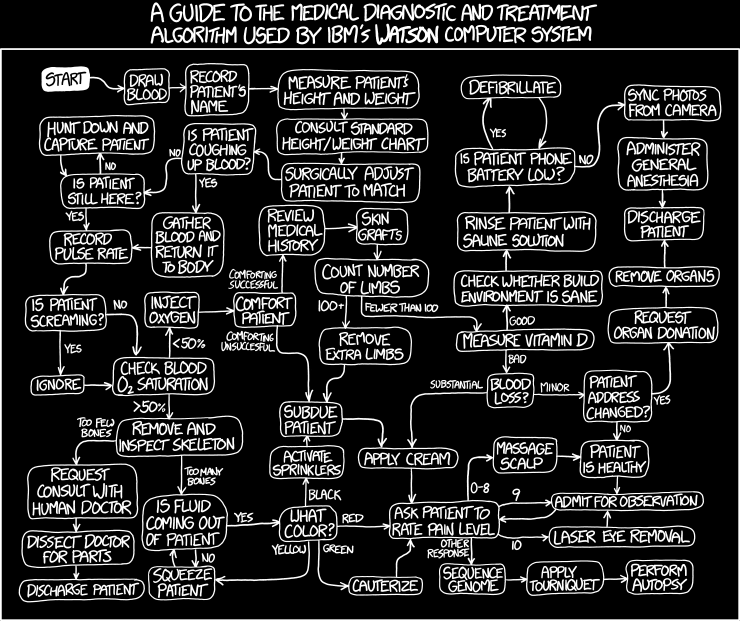
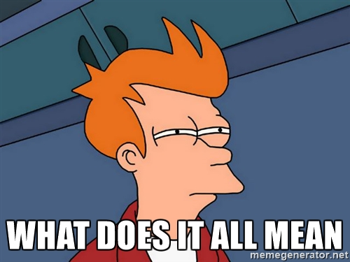
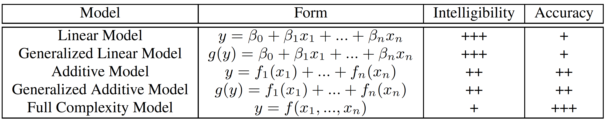
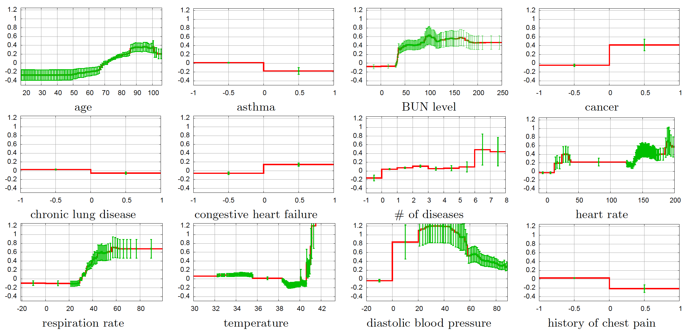
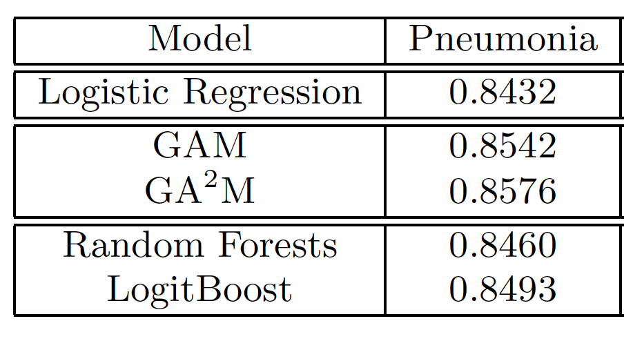
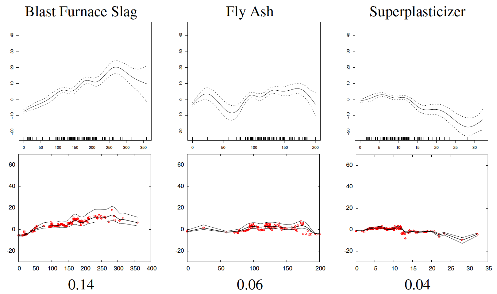

What does it all mean?

xkcd interpretation of IBM's Watson
Model Interpretability vs. Performance
Parametric vs. Non-Parametric Models

Modeling Tradeoffs

- Biased Data + Adv. Learner (RF, NN, SVM) = Danger Zone
- Tendency to overfit spurious patterns introduced by bias [Caruana et al., 2015]
Focusing on Generalized Additive Models (GAMs)
What is a GAM?
- Introduced by Hastie & Tibshirani, Stat. Sci. 1986, 297
- Functional form: $$g(y) = \sum_{i=1}^{p} f_i(x_i)$$
- $g(y)$: link function
- $f_i(x_i)$: shape function of variable $i$ at value $x_i$
Intuition
- Logit:
- $f_i(x_i) = \theta_ix_i$
- $g(y) = \text{log}[y / (1-y)]$
- Score Cards, e.g. FICO : $$ \text{Score} = S_0 + \sum_{i=1}^{p} H_i(c_i)$$
- $c_i$: ScoreCard characteristic
- $H_i$: Characteristic score
- Explicit interactions are intentionally broken!
Intuition
- Shape functions can be nonlinear
- Think about Taylor expansions:
$$ f(x) = f(0) + f'(0)\; x +\frac{1}{2} f''(0)\; x^2 + \dots $$
Example: Pneumonia study

- Goal: predict prob. of death for high risk intervention
- has asthma, has chestpain, is really old $\rightarrow$ lower risk?
Example: Pneumonia study

- GAM discoveres spurious patterns induced by bias
- GAM outperforms other advanced learners on AUC
... before it get's technical
Oh Boy ... Technical Details
What is 'shaping' a feature?
- linear models can't learn non-linear features
- How do we learn shapes?
Stochastic Gradient Boosted GAM

- P-LS for splines vs SGB GAM
- SGB GAM needs only capacity limit vs. hyper-parameter optimization of P-LS
GAM training ‐ Backfitting algorithm
- Initialize: $s_0 = E(Y)$ and $s_k(X_k)=0$
- Iterate: $m = m+1$:
- for $i=1$ to $p$ do:
- $R_i = Y - s_0 - \sum_{k=1}^{j-1} s^m_k(x_k) - \sum_{k=j+1}^p s^{m-1}_k(x_k)$
- $s^m_i = E(R_i|X_i)$
- Terminate: $RSS = E(Y - s_0 - \sum_{k=1}^{p} s^m_k(x_k))^2$ fails to decrease
GAM training ‐ Backfitting algorithm
- $s_i$ typically parameterized
- less flexible as limited in capacity
- approximate shape needs to be known a-priori to choose good model
Better alternatives?
Gradient Boosting
- Loss function for classification:
$$ L(y, F(x)) = \text{log}\left[1+\text{e}^{-2yF(x)}\right]$$
- assume $y=\pm 1$; to minimize loss: $$yF(x) \gg 0$$
- Want to optimize over function space; gradient:
$$- \frac{\partial}{\partial F} L(y, F(x)) = \frac{2y}{1+\text{e}^{2yF(x)}}$$
- Negative gradient is called pseudo-response (PR)
- PR$\in (-2, 2)$; measures how strongly misclassified $x_i$ is
Gradient Boosted GAM ‐ pseudo-code
- Initialize: $f_0 = log[p(y=1)/p(y=-1)]$
- Iterate while $m \leq M$:
- for $j=1$ to $p$ do:
- calculate PR $\tilde{y}_{i}$
- fit $K$-leaf tree: $\{R_{km}\}_1^K = \text{tree}_{m}^K(\{\tilde{y}_{i}, x_{i,j}\})$
- calculate update $\gamma_{km} = \frac{\sum_{x_{i,j} \in R_{km}} \tilde{y}_{i}} {\sum_{x_{i,j} \in R_{km}} |\tilde{y}_{i}|(2-|\tilde{y}_{i}|)}$
- update $f_j = f_j + \sum_{k=1}^K \gamma_{km} \mathbb{1}_{x_{i,j} \in R_{km}}$
Gradient Boosted GAM
- Single regression tree based updates leads to overfitting
- Slow updates as PR converges
- only little variation in the resulting partitioning
- To avoid overfitting
- Induce randomness
- Modify update velocity
- Introduce randomness by sampling $\tilde N < N$ records
- Update GAM on subsample $\{ x_{\pi(i)},y_{\pi(i)}\}_1^{\tilde N}$
SGB GAM ‐ pseudo-code
- Initialize: $f_0 = log[p(y=1)/p(y=-1)]$
- Iterate while $m \leq M$:
- take sample $\{ x_{\pi(i)},y_{\pi(i)}\}_1^{\tilde N}$
- for $i=1$ to $p$ do:
- calculate PR $\tilde{y}_{\pi(i),j}$
- fit $K$-leaf tree: $T_{m}^K(\{\tilde{y}_{\pi(i),j}, x_{\pi(i),j}\})$
- calculate update $\gamma_{km} = \frac{\sum_{x_{\pi(i),j} \in R_{km}} \tilde{y}_{\pi(i)}} {\sum_{x_{\pi(i),j} \in R_{km}} |\tilde{y}_{\pi(i)}|(2-|\tilde{y}_{\pi(i)}|)}$
- update $f_j = f_j + \nu \cdot \sum_{k=1}^K \gamma_{km} \mathbb{1}_{x_{\pi(i),j} \in R_{km}}$
- Randomness averages over spurious data patterns
- Shrinkage parameter (learning rate) $\nu \lesssim 0.1$ prevents big jumps in updates
Take away ...
- SGB GAM combines ideas from
- Interpretable GAMs
- Nonparametric recursive partitioning
- Stochastic Gradient descent
- Python implementation at github.com/jotterbach/dstk
Thanks!
References
- Y. Lou et al., Intelligible Models for Classification and Regression, KDD'12, 150
- K. Larsen, GAM: The Predictive Modeling Silver Bullet, Stitchfix Blog
- R. Caruana et al., Intelligible Models for HealthCare, KDD'15, 1721
- T. Hastie, R. Tibshirani, Generalized Additive Model, Stat. Sci. 1 (1986), 297
- J.H. Friedman, Greedy Function Approximation, Ann. Stat. 29 (2001), 1189
- J.H. Friedman, Stochastic Gradient Boosting, Comp. Stat. 38 (2002), 367
- FICO ScoreCard ModelBuilder white paper (2006)